The many faces of Spider-Man
Peter Parker isn’t the only one wearing the mask. From classic Spider-Man to Miles, Gwen,
and 2099, each Spider-Person brings a different era, tone, and core theme to the legend.
Classic
Peter Parker, Daily Bugle drama, New York street-level stories
Modern
Miles Morales, Ultimate universe, legacy heroes
Spider-Verse
Gwen Stacy, 2099, Noir, and countless multiverse spins
Earth-616
Spider-Man (Peter Parker)
First appearance: Amazing Fantasy #15 (1962)
The original Spider-Man. A Queens teenager turned hero after a radioactive spider bite.
Peter’s constant struggle to balance responsibility, guilt, and everyday life defines
the core of the entire Spider-Mythos.
- Classic Stan Lee / Ditko / Romita runs
- Gwen & MJ, Green Goblin, Venom
- Raimi films, Spectacular, MCU Peter
Earth-1610 / Earth-616
Spider-Man (Miles Morales)
First appearance: Ultimate Fallout #4 (2011)
A Brooklyn teenager who takes up the mantle after the death of his universe’s Peter
Parker. Miles brings invisibility, venom blasts, and a new cultural perspective to the
Spider-legacy.
- Ultimate & 616 runs by Bendis and others
- Into the Spider-Verse & game duology
- Focus on family, legacy, and identity
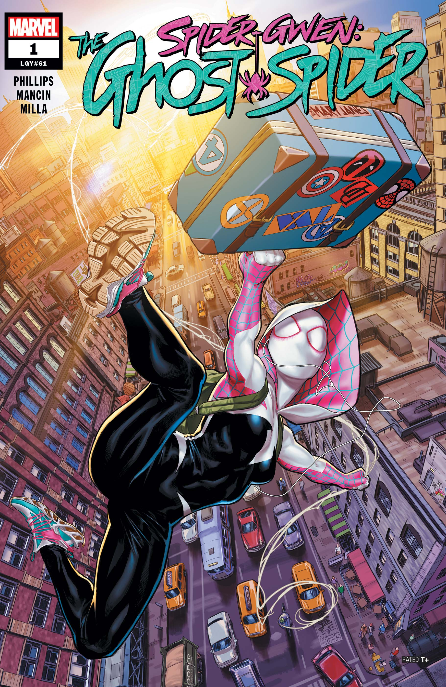
Earth-65
Ghost-Spider (Gwen Stacy)
First appearance: Edge of Spider-Verse #2 (2014)
On her Earth, it’s Gwen—not Peter—who gets bitten by the spider. Drummer, superhero,
and fugitive, she flips the original tragedy and becomes a key face of the Spider-Verse.
- Edge of Spider-Verse & solo series
- Co-lead in Spider-Verse films
- Explores guilt, art, and found family
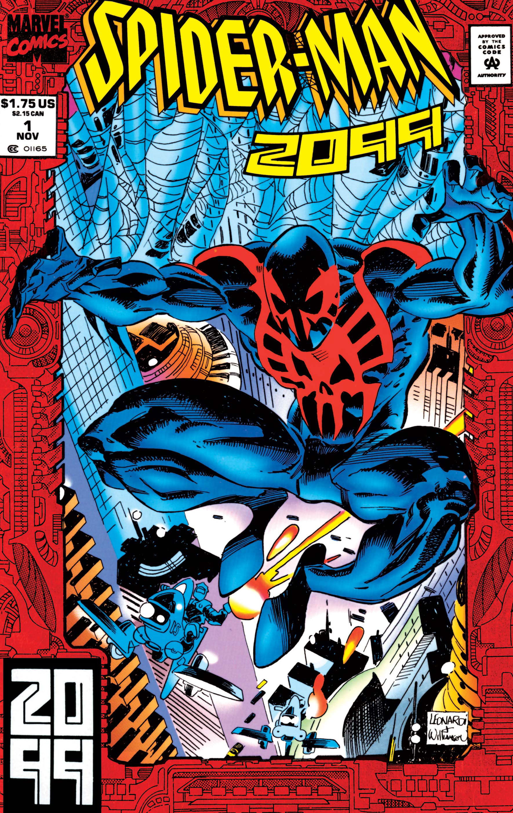
Spider-Man 2099 (Miguel O’Hara)
First appearance: Spider-Man 2099 #1 (1992)
A geneticist in a neon-soaked future who becomes Spider-Man after a corporate experiment
goes wrong. Agile, aggressive, and high-tech, he’s a darker mirror of the original.
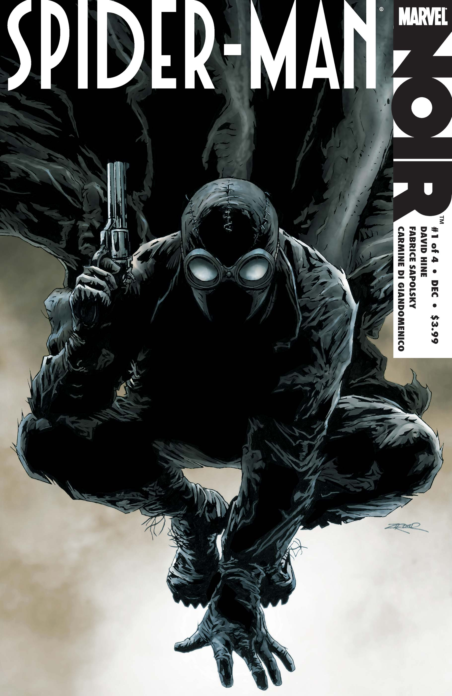
Spider-Man Noir
First appearance: Spider-Man Noir #1 (2009)
A 1930s Spider-Man operating in a pulp, black-and-white world. He fights corruption during
the Great Depression with a darker costume, trench coat, and detective vibe.
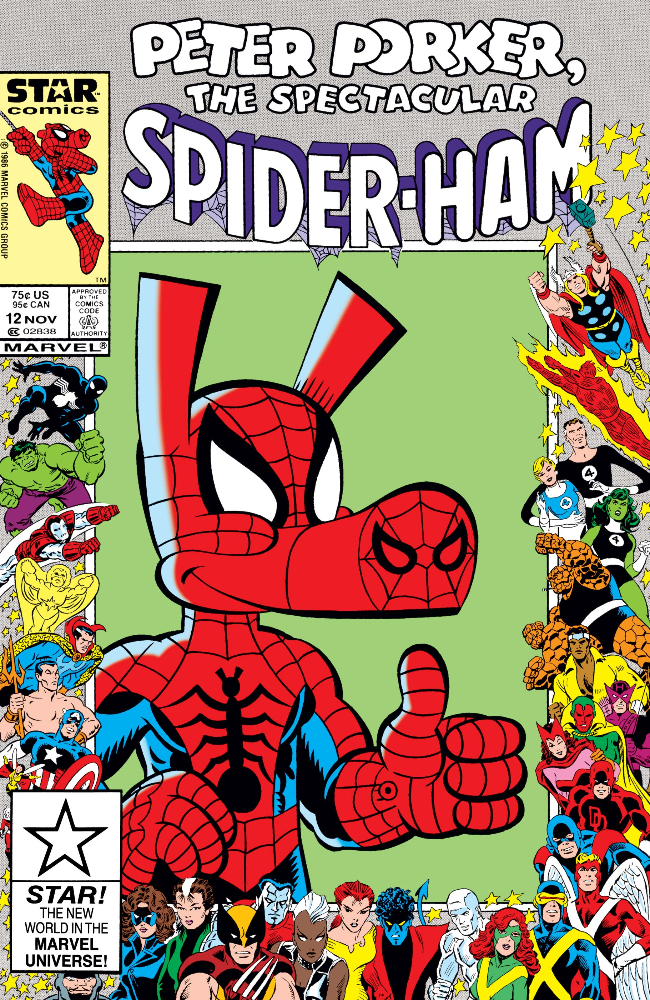
Spider-Ham (Peter Porker)
First appearance: Marvel Tails #1 (1983)
A cartoon parody hero from an animal universe. Goofy, slapstick, and meta, he shows how
far the Spider-Man idea can stretch while still feeling oddly loyal to the original.
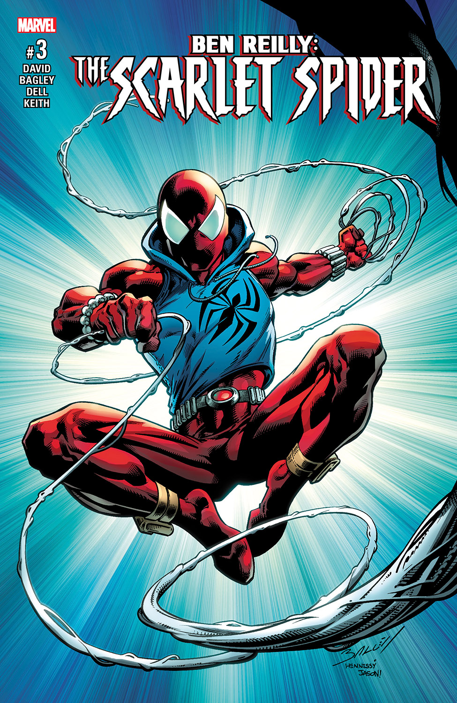
Scarlet Spider (Ben Reilly)
First appearance: Web of Spider-Man #118 (1994)
A cloned Peter Parker who forged his own identity as the Scarlet Spider.
Ben Reilly wears the red suit and blue hoodie, and his stories explore what
happens when someone else carries the weight of great power and responsibility.
Spider-Punk (Hobart Brown)
First appearance: Amazing Spider-Man #10 (2015)
A punk-rock Spider-Man from a world ruled by a fascist Norman Osborn. Hob uses amps,
guitars, and rebellion as much as webs, representing how wildly style and music can
reshape the Spider-Man concept.
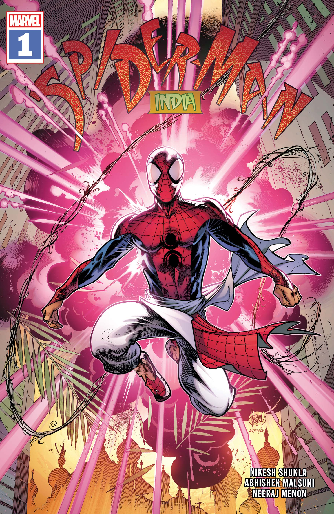
Spider-Man India (Pavitr Prabhakar)
First appearance: Spider-Man: India #1 (2004)
Pavitr is a village kid who moves to Mumbai and gains powers through mystical means instead
of science. His suit and villains remix classic Spider-Man elements through Indian culture
and mythology, later appearing in Spider-Verse media.
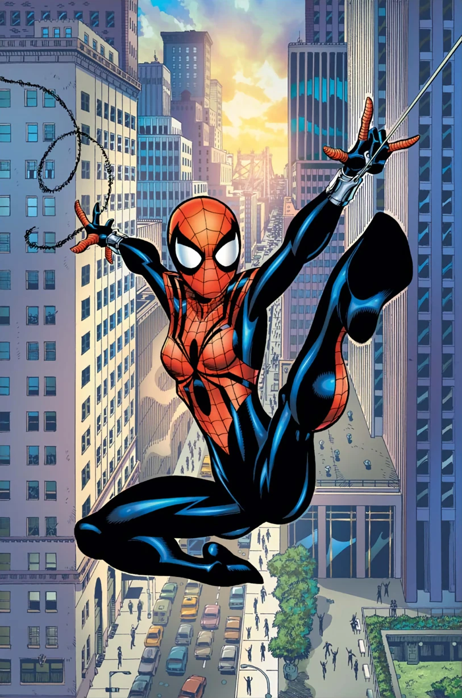
Spider-Girl (May "Mayday" Parker)
First appearance: What If…? #105 (1998)
The daughter of Peter Parker and Mary Jane from an alternate future where they got to
grow up, marry, and have a family. Mayday’s long-running series shows what a true
Spider-legacy looks like across generations.
Spider-Woman (Jessica Drew)
First appearance: Marvel Spotlight #32 (1977)
A super-spy and Avenger whose powers come from a different origin than Peter’s. Jessica
brings espionage, venom blasts, and a very different tone to spider-themed stories, while
still crossing into Spider-Verse events.
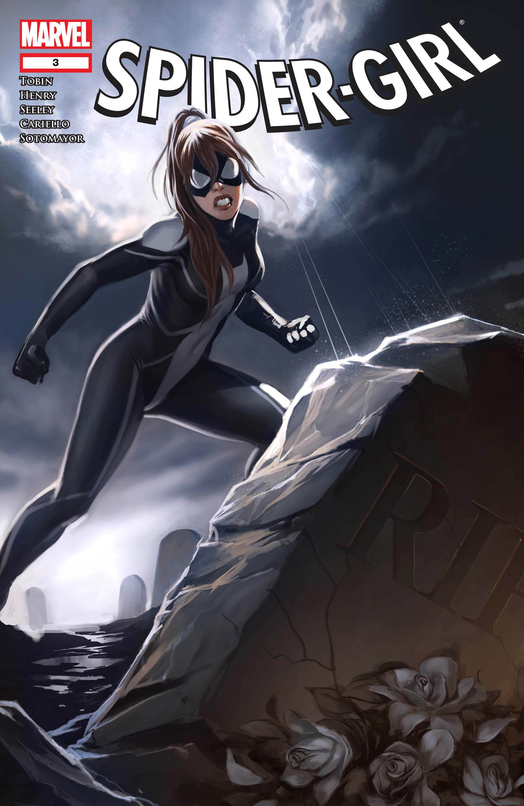
Spider-Girl (Anya Corazon)
First appearance: Amazing Fantasy #1 (2004)
Starting as Araña before adopting the Spider-Girl name, Anya is a Brooklyn-based hero who
mixes mystical spider powers with classic street-level crimefighting and frequently teams
up with other young Spider-heroes.
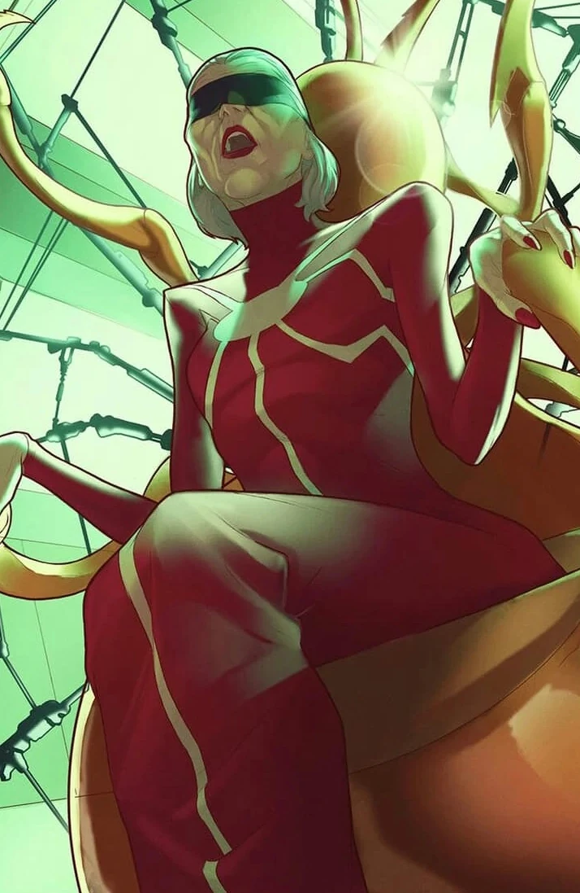
Madame Web
First appearance: Amazing Spider-Man #210 (1980)
A clairvoyant linked to the so-called “Web of Life and Destiny,” Madame Web guides different
Spider-heroes across time and universes. She often acts as the cryptic mentor figure in
multiverse-heavy Spider-Verse stories.
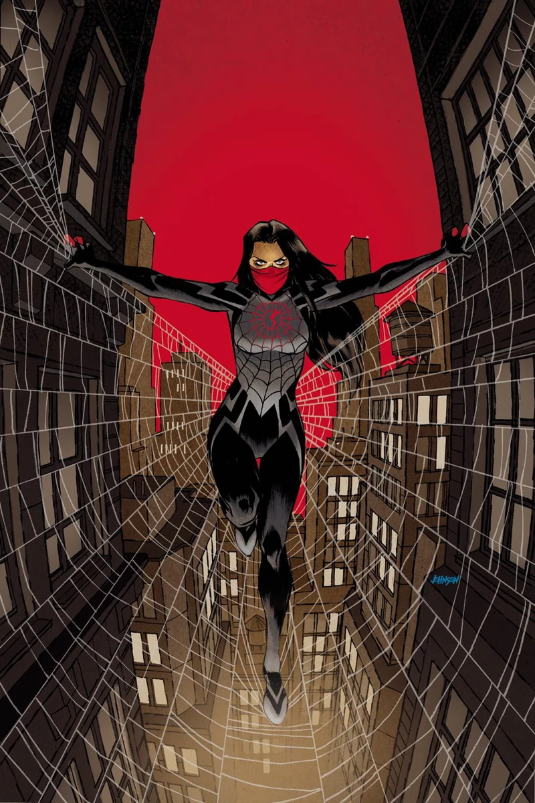
Silk (Cindy Moon)
First appearance: Amazing Spider-Man #1 (2014)
Bitten by the same spider as Peter, Cindy gains similar powers but spends years locked
away for her own protection. As Silk, she brings a fast, feral fighting style and her own
web of stories tied directly to the Spider-Totem mythology.
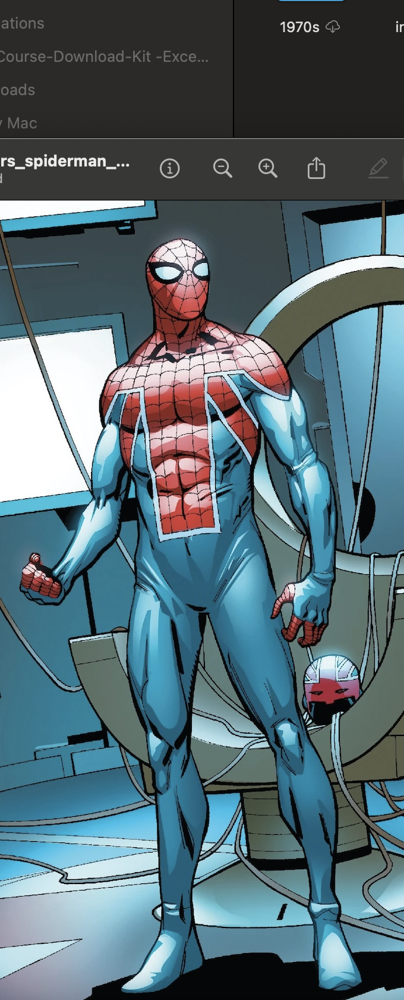
Spider-UK (Billy Braddock)
First appearance: Edge of Spider-Verse #2 backup (2014)
A Captain Britain Corps member who also happens to be his universe’s Spider-Man. Billy acts
as a field leader and multiversal coordinator during the original Spider-Verse event.
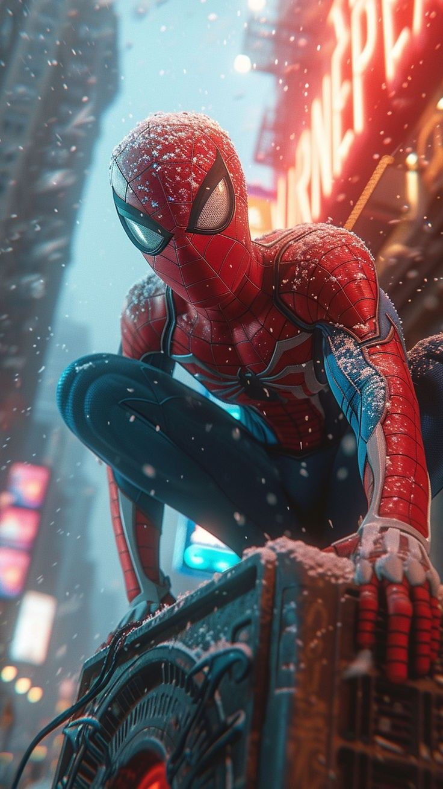
Insomniac Spider-Man (Earth-1048)
First appearance: Marvel’s Spider-Man (2018 game)
A seasoned, mid-20s Peter Parker starring in the hit video game universe. His white-spider
suit, game storylines, and relationship with Miles turned the PS4/PS5 series into one of
the most influential modern Spider-Man interpretations.
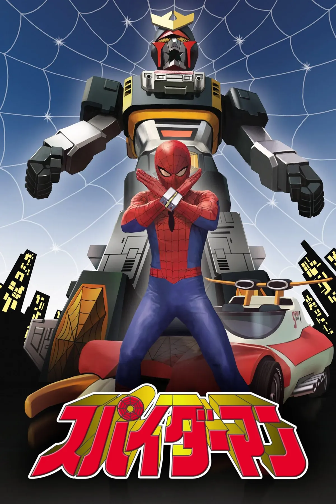
Japanese Spider-Man (Takuya Yamashiro)
First appearance: Japanese TV series (1978)
A motorcycle racer who gains powers from an alien and pilots a giant robot called Leopardon.
Wildly different from Peter’s story, but his inclusion in Spider-Verse proves how global
and adaptable the Spider-Man idea is.
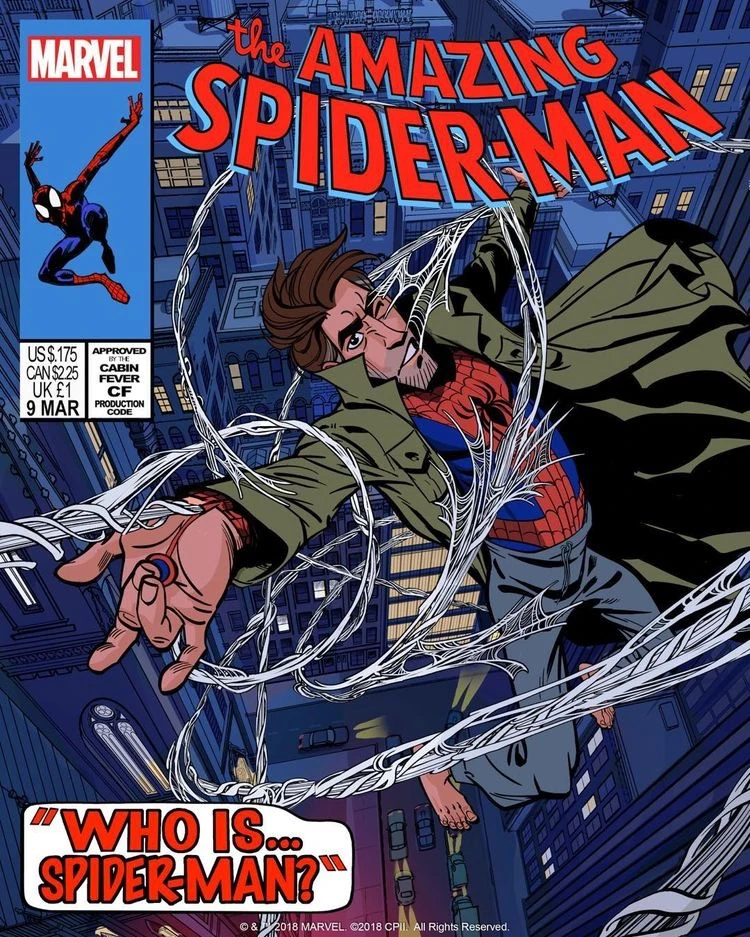
Peter B. Parker
First appearance: Spider-Man: Into the Spider-Verse (2018)
An older, burned-out version of Peter who becomes Miles’s reluctant mentor. His story
shows what happens when Spider-Man keeps going for years—and how he finds his way back.
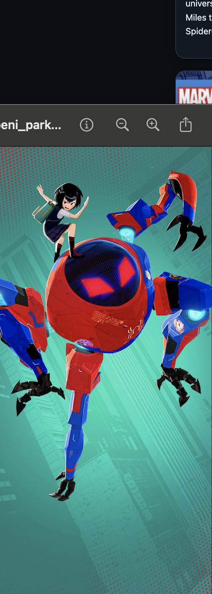
Peni Parker & SP//dr
First appearance: Edge of Spider-Verse #5 (2014)
In a futuristic anime-inspired universe, Peni pilots the SP//dr mech after forming a psychic
bond with its radioactive spider. Her stories blend Spider-Man themes with mecha, school
life,
and grief, and she becomes a key face of the Spider-Verse in the films.